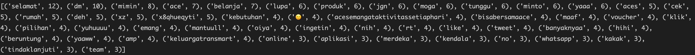
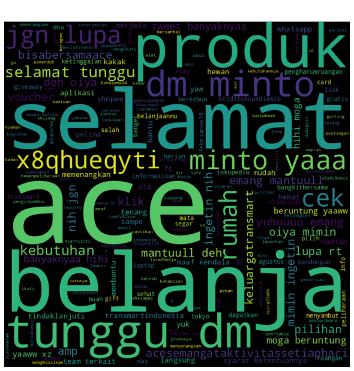

TLDR; we tried to take all of our competitor tweets to know what are they talking about. tried using wordcloud method, but its just too many stopwords, hence no value can be extracted from here. message me on linkeidn if you think ive missed anything.
Scenario
Initially here what i am trying to achieve is to 'snoop' what competitor are doing, by taking their tweets using twitter API, and create wordcloud to know what they talk about.
Of course, we will be using OSEMN. so, let's begin
Obtain
We've obtained the data from twitter API. need to get the token first here.

Firstly, you must know which part of data do you want to get from twitter (retweeets, like, tweets, etc), then you go to their github to get the code boilerplate here (thanks twitter devs!). We will be analysing few biggest retail players in indonesia. Ace, shopee, tokopedia, transmart by getting their raw tweets
Scrub
Remove any punctuations & stopwords that adds no value towards the tweet. indonesian stopword can be found here. and finally tokenise the tweets.
Explore
Have a quick overview on what's the data remains using quick wordcount. we noticed that most of remains are stopwords that makes a meaning only if its a sentence
Model
Still out of curiousity, we still proceed to see wordcloud by using function 'wordcloud_generator' we created
iNterpret
- As expected, it's true. All of the words left has meaning only if its set in complete sentences.
- I had the idea of "listen to your customers" to change the process entirely where user can type in product name, output all tweets about the products. (but issue is too 'noisy' as in, we search 'tupperware' on twitter, and will return jokes that uses the word tupperware & nothing on the tupperware product itself)
Final words from Dwi
You can find the codes here.
Perhaps we can improve this by getting sentiment scores instead & rank them by sentiment from bad to good (to know competitor weakness ?). Stay tuned for second episode (jeng jeng jenggg)